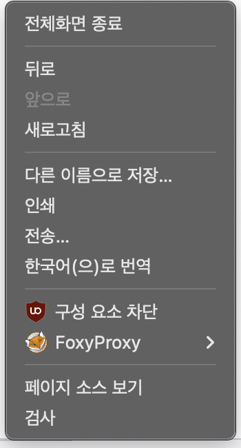

결제 내역 분석을 위해 Apple의 문제 신고 페이지에서 구매 내역 HTML 파일을 저장하는 방법을 안내합니다.
먼저 Apple 문제 신고 사이트에 접속하여 로그인합니다.
로그인하면 최근 구입 항목이 표시됩니다. 페이지 맨 아래로 스크롤하여 모든 과거 내역이 표시될 때까지 반복해서 스크롤을 끝까지 내려주세요.
(내역이 많을수록 로딩 시간이 걸릴 수 있습니다.)
모든 내역이 로드되었으면, 웹 브라우저의 '페이지 저장' 기능을 실행합니다. (단축키: `Ctrl + S` 또는 `Cmd + S`)
(오른쪽 마우스를 클릭해, '다른 이름으로 저장하기' 를 눌러 저장하셔도 됩니다!)
파일 저장 창이 나타나면, 파일 형식을 `웹페이지, 전체` 또는 `Webpage, Complete`로 선택하고 저장합니다.
이렇게 저장하면 .html 파일과 관련 리소스 폴더가 함께 생성됩니다. 저희에게 필요한 것은 .html 파일입니다.
저장한 .html 파일을 Apple 결제 내역 분석기에 업로드하여 결과를 확인합니다.
참고: 이 과정에서 저장한 HTML 파일은 사용자의 개인 컴퓨터에서만 처리되며, 분석기 웹페이지는 어떠한 데이터도 외부 서버로 전송하지 않습니다.